Noticias e Historias
Encuentra todas nuestras últimas actualizaciones, incluidas las principales historias, noticias y eventos de nuestro trabajo en campo junto a nuestros socios locales.

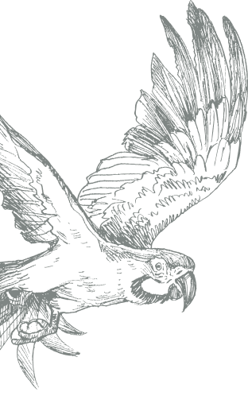
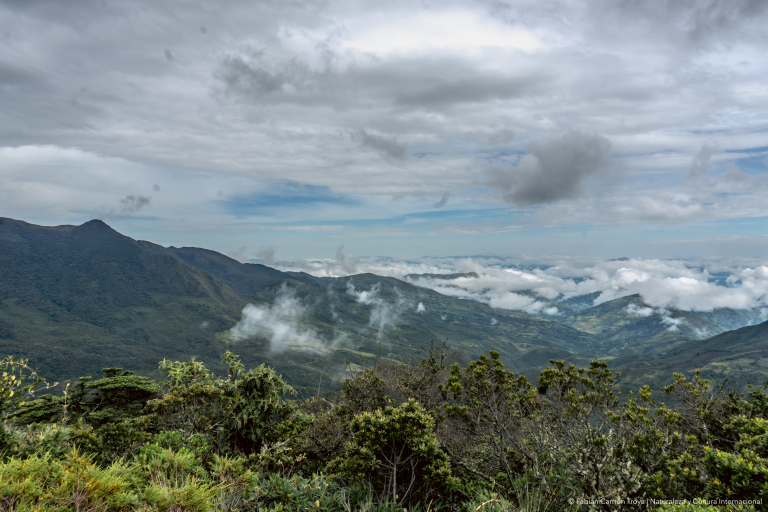
Conocer para conservar: monitoreo en el Corredor de Conectividad Podocarpus Yacuri
septiembre 17, 2026
Guardaparques y guardabosques del
Corredor de Conectividad Podocarpus Yacuri
fortalecieron sus capacidades para monitorear
la fauna silvestre mediante el...
ECUADOR
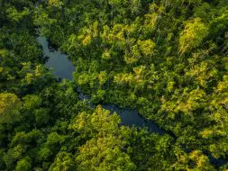
Una carrera para descubrir y conservar el territorio de Orellana
septiembre 1, 2026
Orellana se extiende en el corazón de la
Amazonía ecuatoriana, entre bosques, ríos y
una diversidad de paisajes que...
ECUADOR
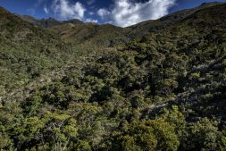
Las comunidades de los Andes del Norte se unen
agosto 16, 2026
En el VIII Encuentro de la Red de Áreas de
Conservación de los Andes del Norte,
representantes de 13...
PERÚ
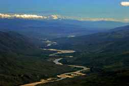
El compromiso comunitario en la ACP Cujillo se renueva
agosto 11, 2026
Con el compromiso de seguir protegiendo
uno de los bosques secos interandinos de
Cajamarca, se realizó la renovación de...
PERÚ
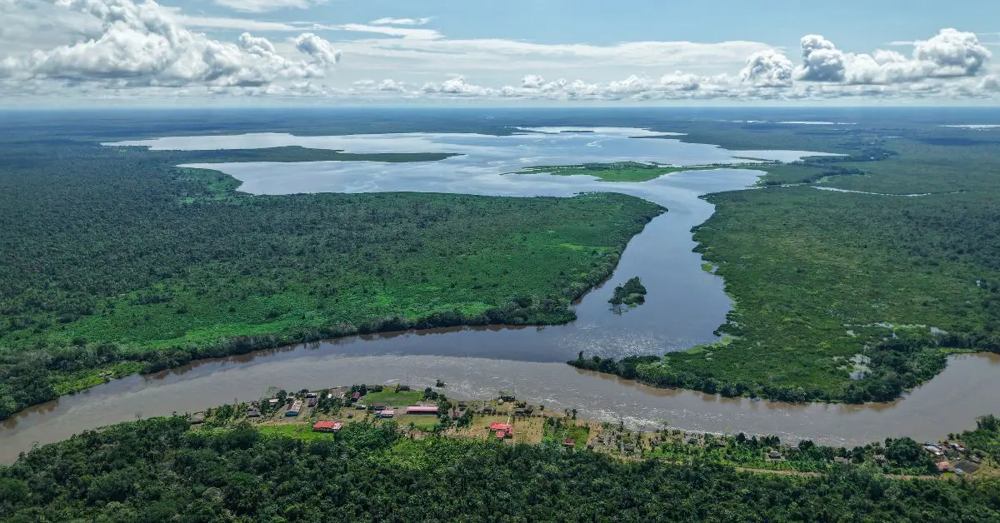
Un paso adelante para una Amazonía conectada
agosto 4, 2026
El reconocimiento del territorio indígena
Tsapuni marca un nuevo paso hacia una
Amazonía mejor conectada y conservada.
Después de...
PERÚ
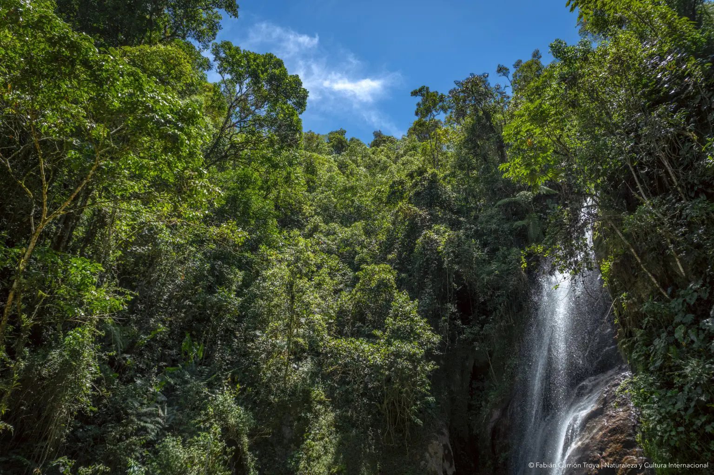
Miel por Bosque fortalece la conservación en Zamora Chinchipe
agosto 3, 2026
Las abejas sin aguijón son mucho más que
productoras de miel. Dependen de bosques y
paisajes agroforestales conservados para
encontrar...
ECUADOR
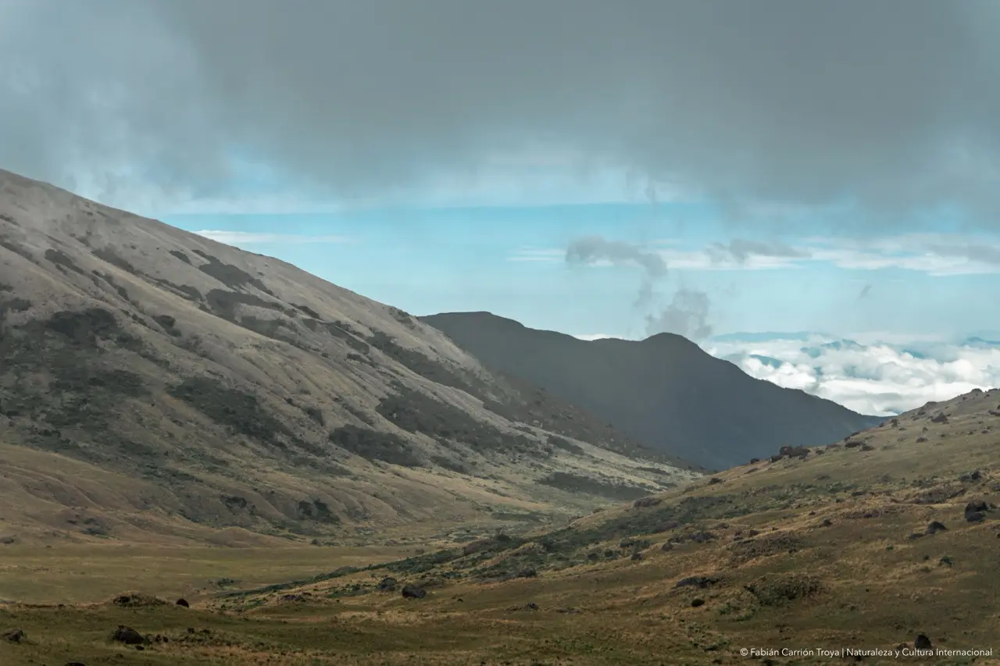
San Andrés: la comunidad que luchó 16 años para proteger el agua y los bosques
julio 29, 2026
En el sur de Ecuador, en la provincia de
Zamora Chinchipe, cantón Chinchipe,
parroquia San Andrés, se ha establecido...
ECUADOR
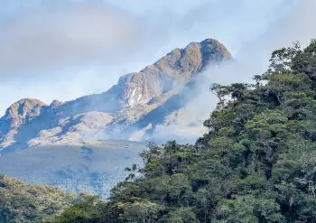
Ocho regiones del Perú se unen en Huánuco
julio 7, 2026
Con el firme objetivo de consolidar la gestión
territorial y proteger la biodiversidad del país,
representantes de ocho gobiernos...
PERÚ
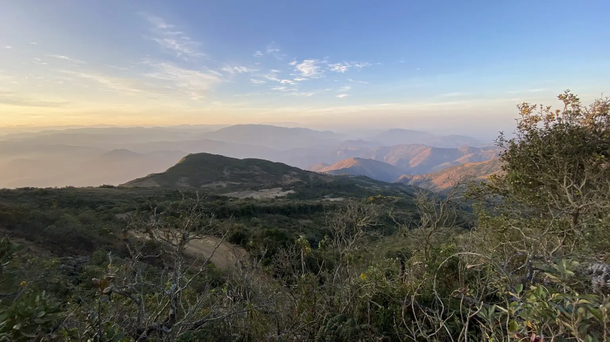
Ecosistemas y especies únicas de El Oro y Loja
junio 22, 2026
Donde el Chocó, los Andes y la región
Tumbesina se encuentran Por: Manuel V.
Sánchez-Nivicela y Juan C. Sánchez-Nivicela
Las...
ECUADOR
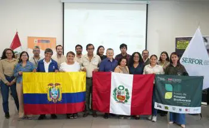
Perú y Ecuador definen acciones para el Plan Estratégico del Corredor de Conservación Transfronterizo Andino Amazónico
junio 16, 2026
Con el objetivo de consolidar una agenda
binacional de conservación y gestión
sostenible del territorio, representantes de
instituciones ambientales...
ECUADOR
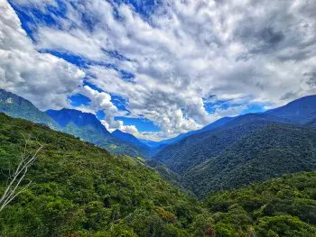
Área de Conservación Regional Yanajanca: la mayor apuesta de conservación en los Andes peruanos
junio 10, 2026
El Área de Conservación Regional Yanajanca
(Huánuco, Perú) es un territorio donde los
Páramos abrazan a las Yungas Peruanas....
PERÚ
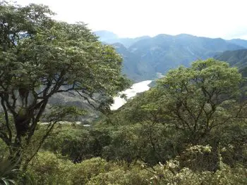
La Libertad: Bolívar avanza hacia su protección
mayo 19, 2026
Los bosques secos del Marañón, es un
bosque único que hoy busca asegurar su
futuro. El proceso para el establecimiento del
Área...
PERÚ
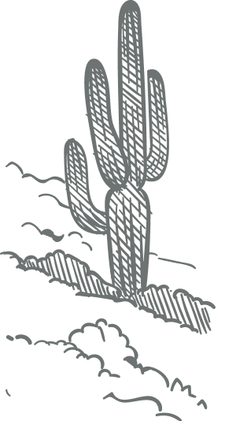
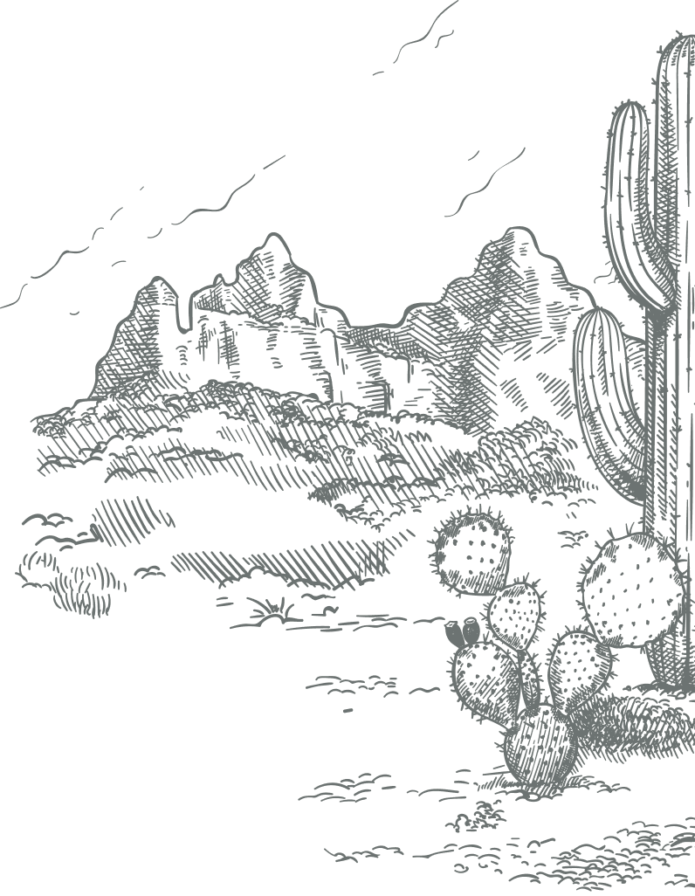
NATURALEZA Y CULTURA EN LAS NOTICIAS
Echa un vistazo a lo que los medios dicen sobre nosotros.
In the mediaFinancieros y
Reportes Medios de
Comunicación Publicaciones Investigaciones Contáctanos Políticas de
Privacidad
Internacional
Naturaleza y Cultura
Internacional
es una
organización
no
gubernamental 501 (c) (e)
EIN: 33-0773524
Del Mar, CA 92014, USA Llámanos +1 (858) 259-0374 Escríbenos hola@naturalezaycultura.org Síguenos en Redes Sociales
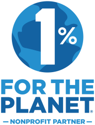
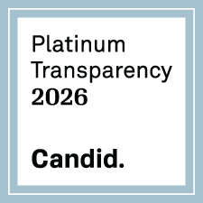